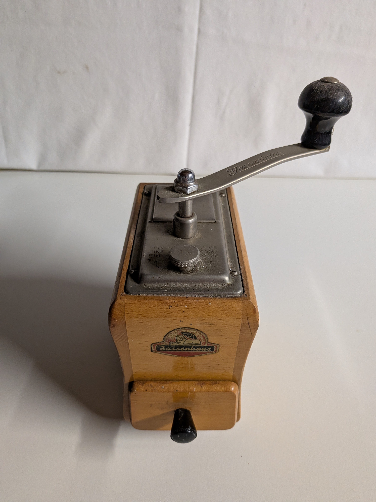
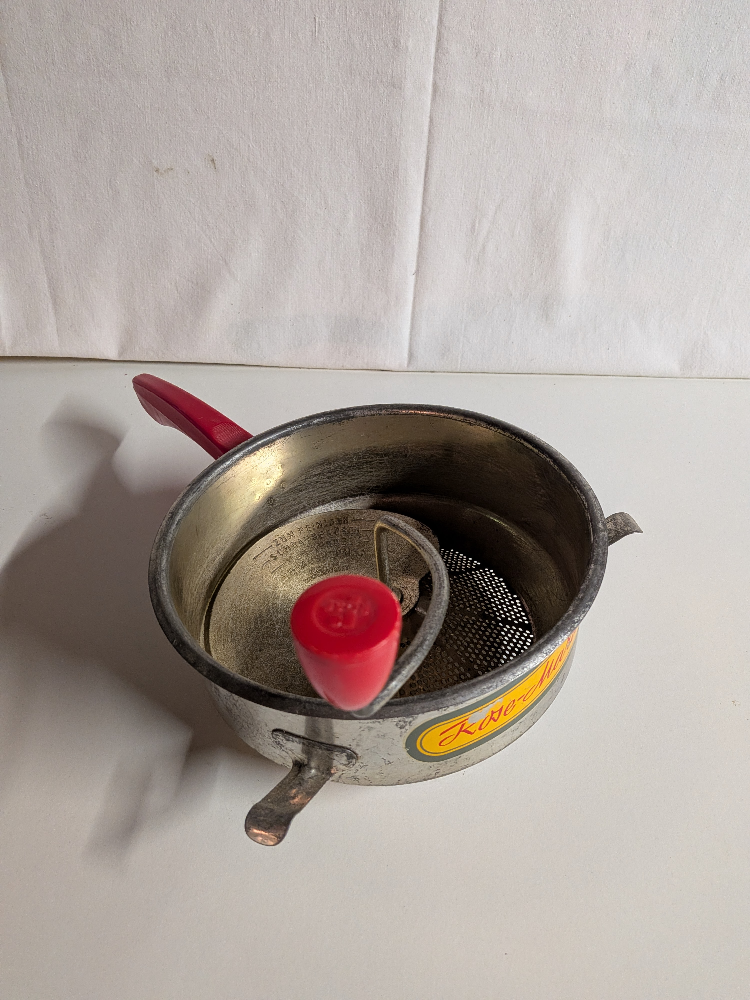
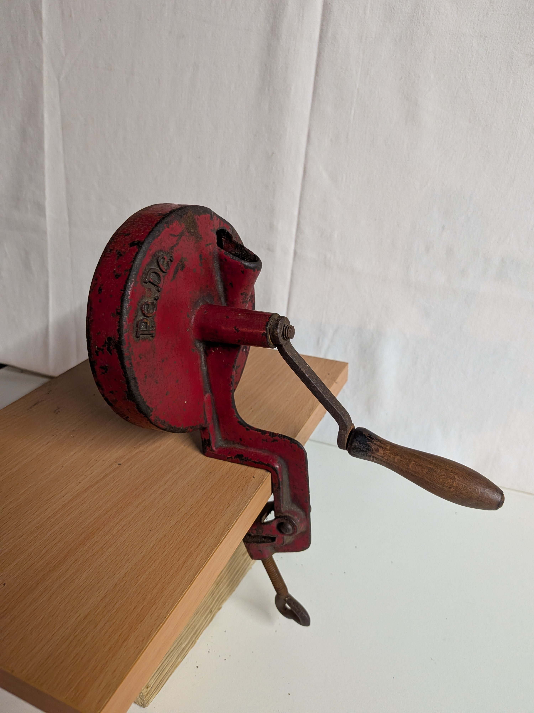
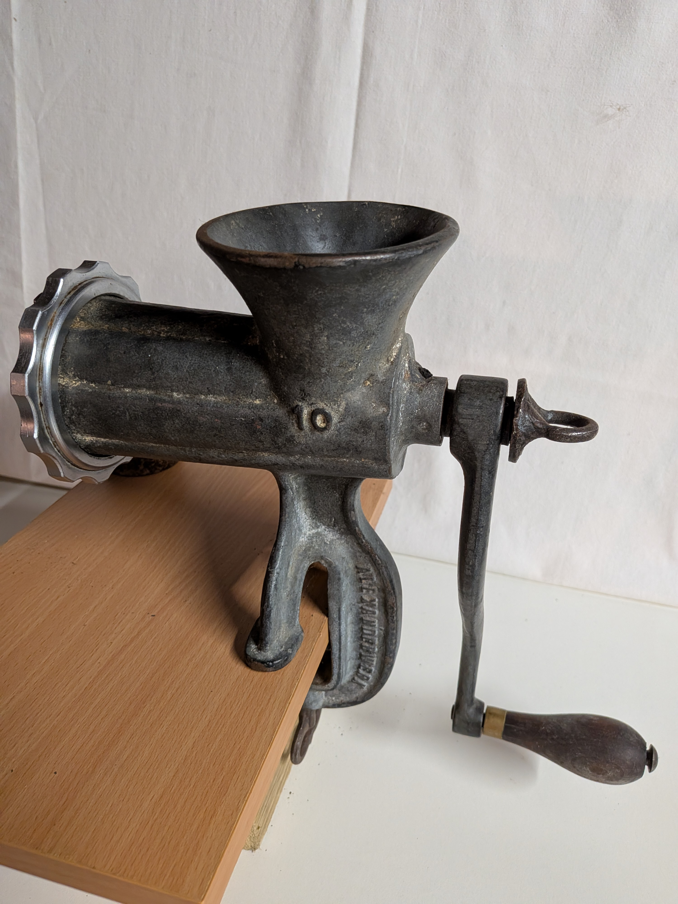
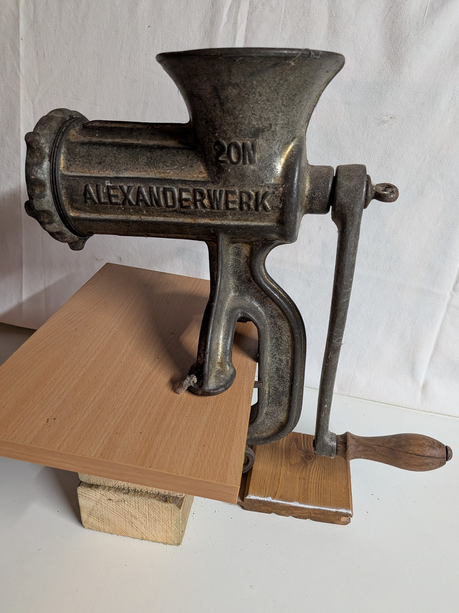

Haushaltsgeräte mit Kurbel
Diese Rubrik zeigt mechanische Haushaltsgeräte, die ohne Strom betrieben werden – durch Handkurbel oder Drehmechanik. Die Geräte sind nach Baujahr sortiert: die ältesten oben.

Kaffeemühle (ca. 1900–1920)
Frühe Handkaffeemühle mit Gusseisen-Mahlwerk und Holzgehäuse. Ein klassisches Haushaltsgerät der Jahrhundertwende.

Bohnenschneider Pe De (Holz-Metall-Ausführung, ca. 1910–1925)
Frühes Modell des Bohnenschneiders der Marke Pe De (Peter Dienes, Remscheid). Das Gerät besteht aus einem Holzrahmen mit Metallmessern und Kurbelmechanik. Es wird mit einer Schraubzwinge am Tisch befestigt und schneidet Stangenbohnen in feine Streifen – ein typisches Küchenwerkzeug der Vorkriegszeit.

Passiergerät „Flotte Lotte“ – Variante „Rose‑Marie“ (ca. 1920–1930)
Mechanisches Passiergerät mit Handkurbel und Siebflügel. Die Variante „Rose‑Marie“ gehört zu den frühen Ausführungen der bekannten „Flotten Lotte“ und wurde zum Passieren von Obst und Gemüse verwendet.

Bohnenschneider Pe De (Gussmodell, ca. 1930–1940)
Spätere Ausführung des Bohnenschneiders von Pe De mit lackiertem Gussgehäuse in Rot. Die Firma Peter Dienes war bekannt für hochwertige Metallverarbeitung und fertigte neben Kaffeemühlen auch Küchenmaschinen. Dieses Modell zeigt die Weiterentwicklung hin zu stabilen, hygienisch lackierten Geräten der Zwischenkriegszeit.

Fleischwolf Alexanderwerk 10 (ca. 1930–1945)
Kompakter Fleischwolf aus Gusseisen für den Haushalt. Typisch für die Vorkriegs- und Kriegszeit.

Fleischwolf Alexanderwerk 20N (ca. 1940–1955)
Robuster Fleischwolf für Haushalt und kleine Metzgereien. Nachkriegsmodell mit Holzkurbel.